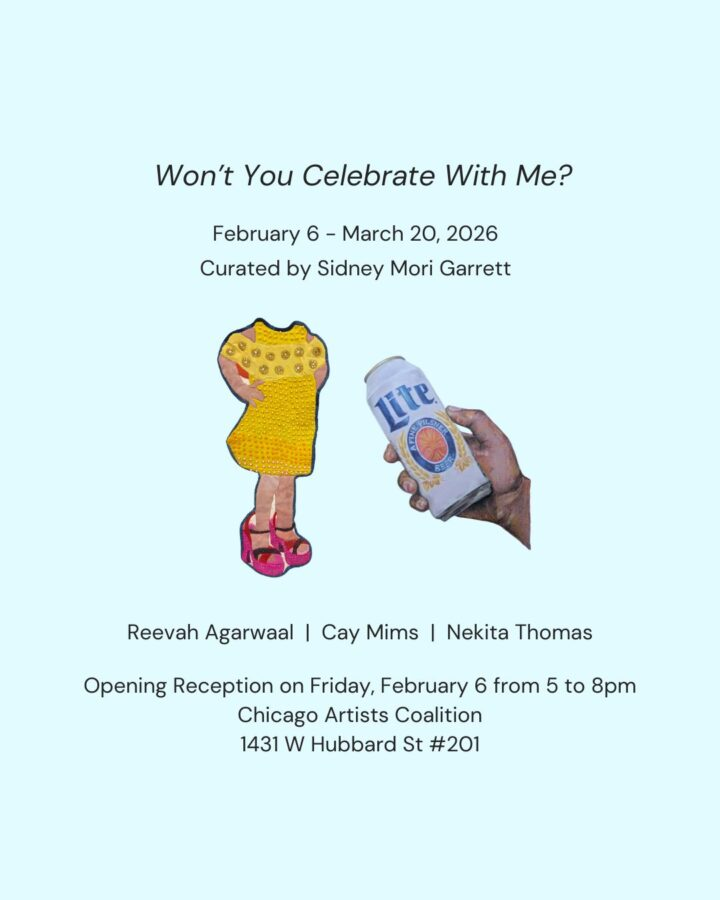

Won’t You Celebrate With Me?
Chicago Artists Coalition presents “Won’t You Celebrate With Me?”, a three-person exhibition by 2024-26 Artist Residents Reevah Agarwaal, Cay B. Mims, and Nekita Thomas, curated by 2024-26 Curatorial Resident Sidney Mori Garrett.
Chicago Artists Coalition presents a three-person exhibition by 2024-26 Artist Residents Reevah Agarwaal, Cay B. Mims, and Nekita Thomas, curated by 2024-26 Curatorial Resident Sidney Mori Garrett.
“what did i see to be except myself? i made it up here on this bridge between starshine and clay, my one hand holding tight my other hand; come celebrate with me that everyday something has tried to kill me and has failed.” — an excerpt from won’t you celebrate with me by Lucille Clifton
Won’t You Celebrate With Me? is an exhibition where artists Reevah Agarwaal, Cay Mims, and Nekita Thomas journey through memory, weaving truth and wonder to investigate what lies beyond the surface.
Part personal archive, part apparition, this exhibition explores themes of memory, lineage, and impermanence. Agarwaal, Mims, and Thomas take their past narratives and shape them into new realities, seeking deeper understanding of what may remain unsaid. Together, they question the ways in which we construct and control our own memories.
Memory distorts and preserves. Lineage is grounded in continuity. Impermanence unsettles both, reminding us that nothing is immune to loss or change. In this exhibition, memory becomes a reconstruction, lineage becomes invention and impermanence becomes the only constant.
This is a celebration of what we make true.
The opening reception will be on February 6 from 5-8pm.